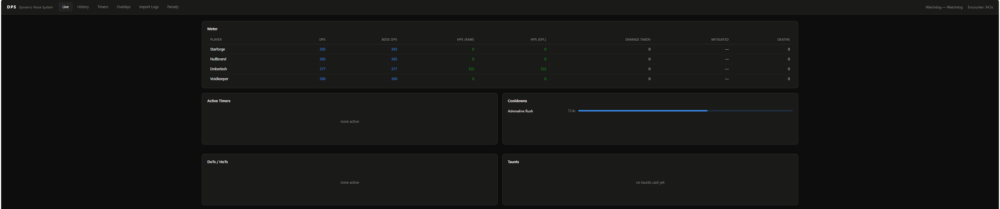
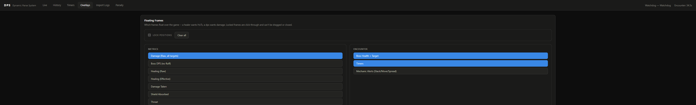
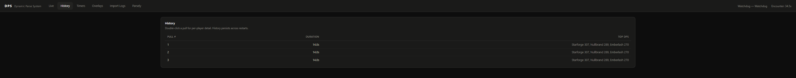

A live combat log parser for Star Wars: The Old Republic. DPS/HPS meters, boss mechanic call-outs, and floating in-game overlays — plus something BARAS and StarParse don't do: analytics across your entire raid history, not just the current pull.
Not affiliated with BioWare, EA, or Lucasfilm. Reads combat log text files only — never touches game memory or files.

Built directly against real BARAS and ORBS timer data, then verified line-by-line against real combat logs — not guessed at.
Per-player damage, healing (raw and effective), damage taken, mitigation, and deaths — updating in real time as the fight happens.
Phase-aware timers and spoken call-outs for 163 translated encounters, driven by a data file per boss — not hardcoded per fight.
See exactly which target each dot or hot is actually on — including AoE effects landing on several targets at once.
All 31 real defensive cooldowns on a countdown, plus a log of every taunt cast and whether it actually landed.
Draggable, click-through, always-on-top HUD bars for whatever you personally need on screen — a healer wants HoTs, a DPS wants damage.
A separate dashboard reads your whole CombatLogs folder as one dataset — longitudinal trends and death forensics across months, not one session.

History persists across restarts — double-click any pull for a full per-player breakdown.

Yes. It only reads the combat log text files SWTOR already writes to disk
(Documents\Star Wars - The Old Republic\CombatLogs) — it never reads game
memory, injects into the game process, or modifies any game file. Same category of tool
as BARAS, StarParse, and ACT: a plain text-file reader that happens to run alongside the
game, not something that touches it.
Free, open source, and unsigned — Windows will flag it as an unrecognized publisher on first run. Click More info → Run anyway.
Prefer to build it yourself? Run from source instead — needs Python 3.8+.
Boss/phase engine design and encounter timer data translated directly from BARAS's own open-source definitions.
github.com/baras-app/baras →51 additional operation and flashpoint timer definitions machine-translated from ORBS's timer data.
github.com/L34T/ORBS →Trailing-capture window design (DoT/HoT ticks after ExitCombat still count toward the fight that just ended) follows StarParse's own approach.